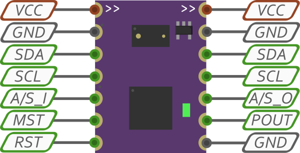

SensorDot Pinout and Connections
Each of the devices in the SensorDot range has the following pinout:

The arrow designations at the top of the SensorDot determine their information flow with respect to the auto addressing and synchronisation. The addressing and synchronisation pulses will flow from left to right through the A/S pins, starting from the device designated as the master and the flow denoted by the arrows on the top of the board (these pins are the only ones with directionality). The master can be set by shorting the MST pin to ground, or bridging the two MST pads on the board. There must be one and only one master on an I2C bus, unless you are performing your own address ranges. Each address range will require a separate 1wire connection to a microcontroller.
Pin Descriptions
- VCC - 2.8-5V input. Please note, connecting the wrong polarity will cause damage to the SensorDots. Voltages above 5.5V will damage the MappyDot. Both VCC pins are connected straight through to each other.
- GND - Ground connections.
- SDA - I2C SDA pin. Low <= 0.3V, high >= 0.7V. Pull-up required. Can be pulled to a lower VCC than 2.8V and still be functional (will work with 1.8V devices with a separate power supply for example). Both SDA pins are connected straight through to each other.
- SCL - I2C SCL pin. Low <= 0.3V, high >= 0.7V. Pull-up required. Can be pulled to a lower VCC than 2.8V and still be functional (will work with 1.8V devices with a separate power supply for example). Both SCL pins are connected straight through to each other.
- A/S_I - Address and sync input. Do not short this pin to ground.
- A/S_O - Address and sync output. Do not short this pin to ground.
- MST - Master pin. Short to ground to denote master device for addressing.
- POUT - Thresholded pulse, measurement interrupt or PWM output. Do not short this pin to ground.
- RST - Microcontroller reset pin. Pulling this pin low resets the MappyDot. Useful for recovering the microcontroller after performing a bad firmware write. If you are connecting this pin to a button, you should follow the design in the development board schematic. Be sure to use a pull-up if connecting this pin to a microcontroller.
How to Connect
Both I2C SDA and SCL pins are connected straight through to each other, which allows you to string SensorDots together on a bus as seen in the image below.
The sync connection denoted by the green wire is optional. It serves to increase the speed of the syncronisation between devices for the fastest update rates, if using crosstalk reduction. This is an optional feature and only should to be used if each SensorDots's field of view overlaps with the SensorDot next to it in harsh operating conditions. By default the SensorDots will not use crosstalk reduction and will measure at the fastest possible rate. If you turn crosstalk reduction on, it will wait for the measurement synchronisation pulse before measuring, which starts from the master and loops around the devices.
The SensorDots can also be connected in the following non-bused way (once again, the green wire is optional):
Mix and Match
SensorDots supports mixing and matching different devices on the same bus with the same incremental address range, provided you connect the address/sync pins in a loop as shown. It is generally favoured to group each device next to one and other on the bus to give the best crosstalk reduction possible and to help plan out your device placement. If you enable crosstalk reduction on some devices and not others and mix different devices around the bus, then everything will still continue to work. The devices that don't have crosstalk enabled will read at the fastest possible rate and they will pass on the measurement pulse to the next device in the chain.
Alternatively if you are using your own address ranges with various groups of addresses (for example 0x40-0x49 and 0x60-0x69), the sync lines must be connected in separate rings for each of the groups:
Programming Header
At the bottom of the SensorDots is a 1.27mm SPI programming header for an AVR programmer. The pins are designated 1 to 6 from right to left. The pin numbers correspond to the pins of a 2.54mm 6pin SPI header.
The pins of a 6pin SPI header are as follows:
- MISO/TDO
- VTG
- SCK/TCK
- MOSI/TDI
- /RESET/nSRST
- GND
A 6pin SPI breakout header for this is available on the GitHub repository.